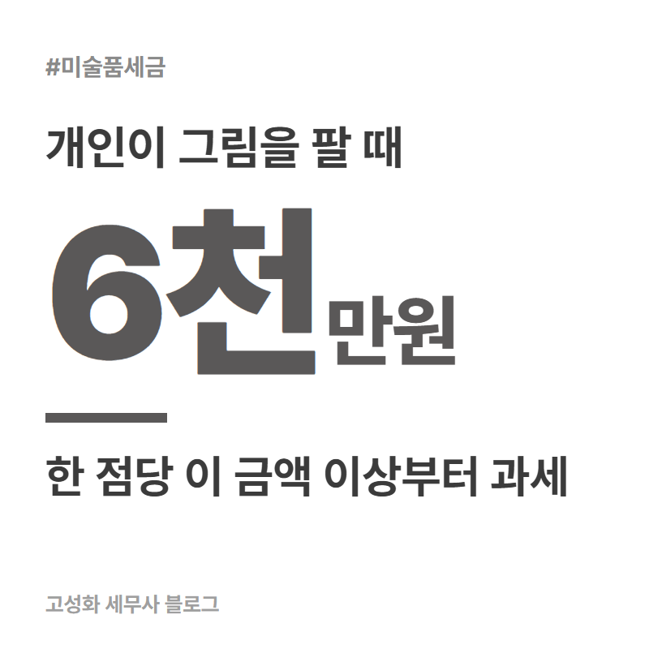
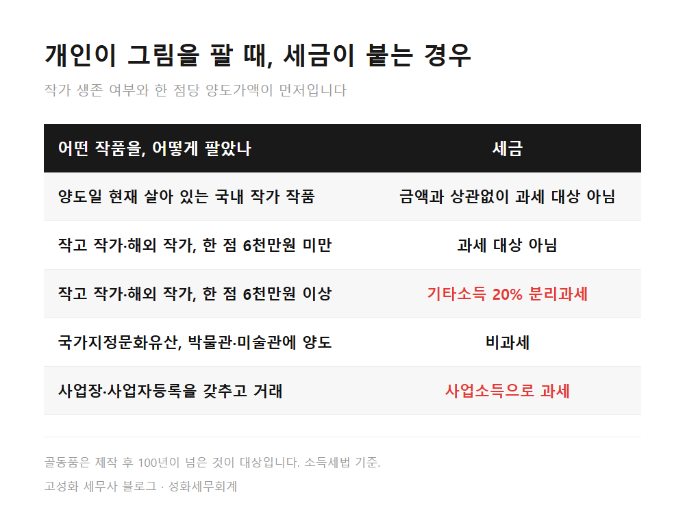
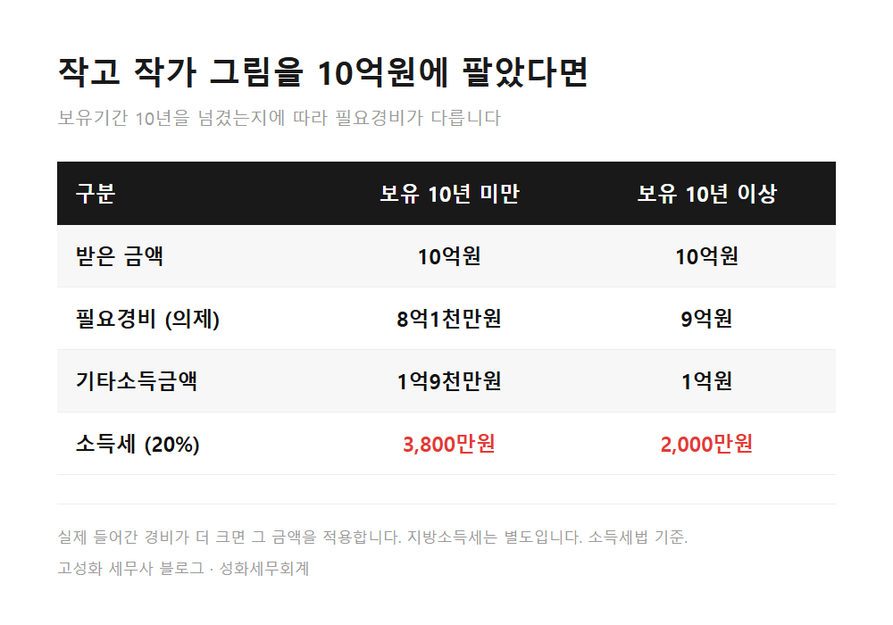
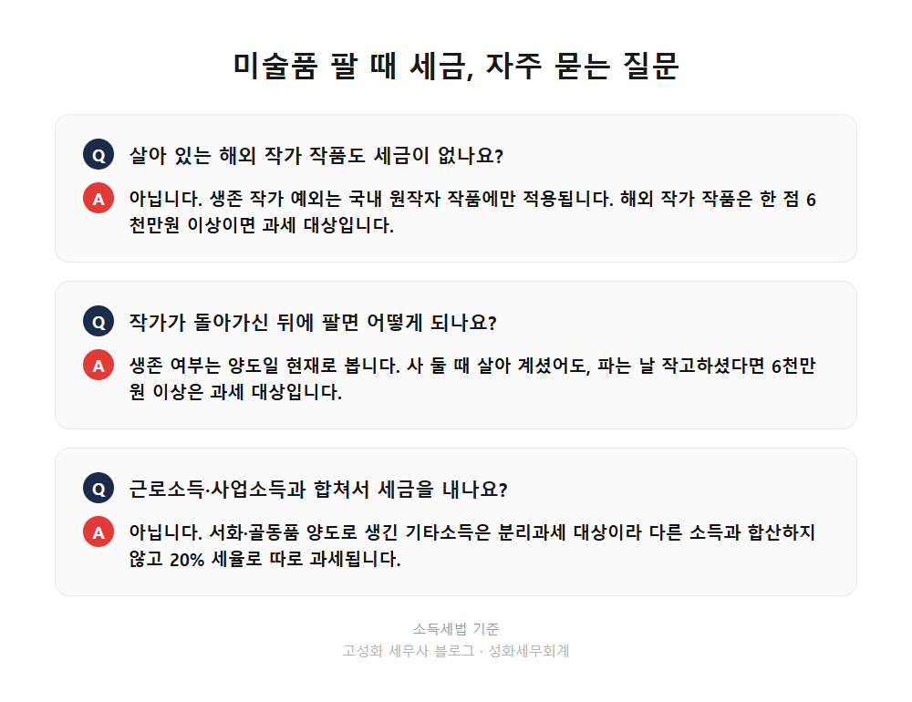

미술품 팔 때 세금, 6천만원 기준과 생존작가 예외 1편

그림을 팔아도 세금이 안 나오는 경우는 정해져 있습니다. 파는 날 기준으로 살아 있는 국내 작가의 작품이면 금액과 상관없이 과세 대상이 아니고, 그 밖의 작품은 한 점을 6천만원 이상에 팔 때 기타소득으로 20% 과세됩니다.
"그림은 팔아도 세금 0원"이라는 말은 절반만 맞는 셈입니다.
이 글을 보고 계신 분은 ① 오래 소장해 온 작품을 정리하려는 분 ② 부모님께 상속이나 증여로 받은 그림이 있는 분 ③ 몇 점 사고팔다 보니 이게 사업인지 궁금해진 분일 겁니다. 세 경우 모두 아래에서 확인하실 수 있습니다.
- 그림 팔 때 세금, 과세되는 작품과 안 되는 작품
- 세금이 붙어도 부담이 가벼운 이유, 필요경비 최대 90%
- 상속받은 그림, 자주 사고파는 경우 실무에서 막히는 지점
한눈에 보기




자주 묻는 질문
살아 있는 해외 작가 작품도 세금이 없나요?
아닙니다. 생존 작가 예외는 국내 원작자 작품에만 적용됩니다. 해외 작가 작품은 한 점 6천만원 이상이면 과세 대상입니다.
작가가 돌아가신 뒤에 팔면 어떻게 되나요?
생존 여부는 양도일 현재로 봅니다. 살 때 살아 계셨어도 파는 날 작고하셨다면 6천만원 이상 작품은 과세 대상입니다.
근로소득이나 사업소득과 합쳐서 세금을 내나요?
아닙니다. 서화·골동품 양도로 생긴 기타소득은 분리과세 대상이라 다른 소득과 합산하지 않고 20% 세율로 따로 과세됩니다. 다만 사업장을 갖추고 거래해 사업소득이 되면 합산됩니다.
정리하면
미술품 팔 때 세금은 두 가지로 먼저 정해집니다. 파는 날 살아 있는 국내 작가의 작품인지, 한 점당 6천만원 이상인지입니다. 과세되더라도 필요경비를 80~90%까지 인정받고 20%로 분리과세되니, 판 금액에 비해 세금 부담은 크지 않은 편입니다.
다만 내 작품이 어디에 해당하는지는 작가 생존 여부, 취득 경위, 보유기간, 거래 빈도를 함께 봐야 정확합니다. 상속받은 작품이라 경위가 복잡해서 어디서부터 설명해야 할지 모르겠다면, 갖고 계신 자료만 들고 오셔도 됩니다. 순서는 저희가 정리해 드리겠습니다.
다음 글에서는 법인이 미술품을 살 때 비용으로 처리되는 조건을 정리하겠습니다.
본문 전체와 근거 조문은 블로그에서 확인하실 수 있습니다.